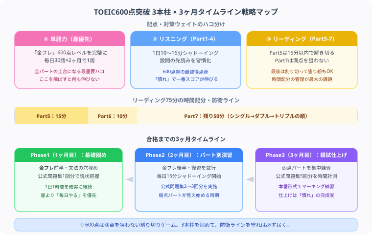

TOEIC 600点の勉強法・突破スケジュール【2026年版】
『就活や転職の最低ライン、TOEIC 600点をもぎ取るぞ！』と決意して、いざ公式問題集を開いた瞬間……「うわっ、なんじゃこりゃ、2時間で200問も解くなんて量多すぎるし、長文が全部呪文に見えて頭パンクするわ！」とフリーズしていませんか？（笑）
毎日会計士という重い数字や法律の猛勉強と格闘している僕の視点から、かけた時間と努力を最速でスコアに変えて回収できる【TOEIC 600点最速独学逆算スケジュール】を、優しくナビゲートします！
最後まで読んでもらえたら、記事の一番下にある【いいねボタン】のプッシュをお願いします！
TOEIC 600点とは？

TOEIC 600点は、日本の就活・転職活動で頻繁に見かける「英語力の最低ライン」です。エントリーシートや求人票に「TOEIC 600点以上」と記載する企業は多く、取得しておくと選考でのアピールポイントになります。
- 就職活動でよく見る最低ライン：メーカー・商社・金融など幅広い業界で600点がボーダー設定されることが多い
- 平均スコアの少し上：全受験者の平均スコアは約580点（公式データより）。600点は平均をわずかに上回るレベル
- 英語が苦手でも到達可能：正しい学習順序と適切な教材があれば、3〜6ヶ月で現実的に到達できるスコア
現在のスコア別・必要勉強時間
| 現在のスコア | 必要勉強時間の目安 | 期間の目安（1日1時間換算） |
|---|---|---|
| 400点以下 | 200〜300時間 | 約6ヶ月 |
| 400〜500点 | 100〜150時間 | 約3〜4ヶ月 |
| 500〜550点 | 50〜100時間 | 約2〜3ヶ月 |
上記はあくまで目安です。毎日継続できる学習時間と、苦手分野の量によって個人差があります。現在のスコアが高いほど、少ない時間で600点に到達できます。
TOEIC 600点突破のための3本柱
1. 単語力（最優先）
TOEICで高スコアを取るためには、ビジネス英語特有の語彙が欠かせません。まず取り組むべき教材は「TOEIC L&R TEST 出る単特急 金のフレーズ（金フレ）」です。
- 金フレの600点レベルまでの単語を完璧にすることが最優先
- 毎日30語を目安に覚え、2ヶ月で1周が目安のペース
- オフィス・会議・出張・採用などのビジネス語彙が特に頻出
- 例文ごと覚えると文法力・リーディング力も同時に強化できる
2. リスニング（Part 1〜4）
600点帯ではリスニングでスコアを稼ぐのが鉄則です。リスニングは慣れによって伸びやすく、短期間での得点アップが狙いやすい領域です。
- 1日10〜15分のシャドーイングを毎日続ける
- Part 2（応答問題・25問）は比較的短い音声のため、まず先に完成度を高める
- Part 3・4は設問の先読みが必須。音声が流れる前に選択肢を読んでおく習慣をつける
- 公式問題集の音声をそのままシャドーイング素材として使うのが最も効率的
3. リーディング（Part 5〜7）
リーディングはスコアが伸びにくい代わりに、パターン学習の効果が出やすいセクションです。時間配分の管理が最大の課題です。
- Part 5（短文穴埋め・30問）は15分以内で解き切る練習を積む
- Part 7は全問正解を狙わなくてよい。シングルパッセージ→ダブル→トリプルの順に解く
- 時間が足りない場合、Part 7の最後の10問は残り時間で塗り絵も戦略のうち
- 文法は「文型・時制・品詞」の基本3項目を押さえるだけで大きく得点が変わる
パート別攻略と時間配分
| パート | 種類 | 問題数 | 目標時間 | 攻略ポイント |
|---|---|---|---|---|
| Part 1 | 写真描写 | 6問 | 4分 | 確実に満点を狙う。消去法で選択肢を絞る |
| Part 2 | 応答問題 | 25問 | 15分 | 最初の2語で判断し、罠の選択肢に注意 |
| Part 3 | 会話 | 39問 | 20分 | 設問先読み必須。次の会話セットに備える |
| Part 4 | 説明文 | 30問 | 15分 | 設問先読み必須。アナウンス・留守番電話が頻出 |
| Part 5 | 短文穴埋め | 30問 | 15分 | 文法・語彙を確実に。1問30秒が目安 |
| Part 6 | 長文穴埋め | 16問 | 10分 | 前後の流れを読んでから穴を埋める |
| Part 7 | 長文読解 | 54問 | 残り全部 | シングル→ダブル→トリプルの順に解く |
600点突破の3ヶ月学習スケジュール
| 時期 | 学習内容 | 1日の目安 |
|---|---|---|
| 1ヶ月目 | 金フレ前半（〜600点レベル）、文法の穴を埋める（TOEIC文法問題集）、公式問題集1回分を解いて現状把握 | 1時間 |
| 2ヶ月目 | 金フレ後半・復習、毎日リスニング15分（シャドーイング）、公式問題集2〜3回分 | 1〜1.5時間 |
| 3ヶ月目 | 弱点パートの集中練習、公式問題集5回分、本番形式で時間計測・マーキング練習 | 1.5〜2時間 |
使うべき教材は2冊だけ
TOEICの参考書は数多くありますが、600点突破に必要な教材は実質2冊です。教材を増やしても得点は上がりません。同じ教材を繰り返すことで本物の力がつきます。
- 「TOEIC L&R TEST 出る単特急 金のフレーズ」（朝日新聞出版）：単語はこの1冊だけで十分。TOEIC頻出単語が出題頻度順に並んでいるため、600点レベルまでを集中的に覚えられる
- 「公式TOEIC Listening & Reading 問題集」（ETS）：本番と同じクオリティの問題が収録された唯一の公式過去問集。本番前に最低5回分は解いておきたい
600点から次のステップ
TOEIC 600点を取得した後の次の目標は730点です。730点は就職・昇進の評価が一段上がるスコアとして広く認知されており、多くの企業で「英語を使える社員」の基準とされています。
- 730点突破には追加で100〜150時間が目安（600点からなら2〜4ヶ月）
- 730点レベルではPart 7を全問解き切る速読力が求められる
- 英検準1級（TOEIC換算730〜820点相当）との併願も選択肢に入れてみる価値がある
⚔ TOEIC学習時間を積み上げよう
スタディクエストなら毎日のTOEIC学習時間が経験値に変わります。
600点・730点を目指す仲間とライバルしながら継続できます。完全無料。
まとめ
- TOEIC 600点は全受験者平均を少し上回るレベルで、3〜6ヶ月の継続学習で到達できる
- 単語は「金のフレーズ」の600点レベルを完璧にすることが最優先
- 600点帯はリスニングで稼ぐのが鉄則。毎日15分のシャドーイングを習慣化する
- 教材は「金フレ」と「公式問題集」の2冊だけに絞り、繰り返し使い込む
- 600点取得後は730点を次の目標に設定し、追加100〜150時間で達成を目指す
英語への苦手意識に負けず、自分のキャリアと未来のために今日も一歩を踏み出しているあなたは、本当にかっこいいと思います。会計の勉強と格闘している僕も、同じ気持ちで日々机に向かっています。焦らず3本柱を積み上げれば、600点は必ず届きます。心から応援しています！
この記事が少しでも力になったら、下の【いいねボタン】をポチッと押してもらえると、執筆のモチベーションになります。